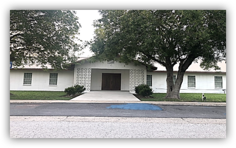

| Horas de servicios | Service Schedule | ||
|---|---|---|---|
| Domingo | 9:45 | Sunday | 9:45 |
| Escuela Dominical | Sunday School | ||
| 11:00 AM | 11:00 AM | ||
| Adoración y sermón | Worship and sermón | ||
| 05:30 PM | 05:30 AM | ||
| Adoración y Compañerismo | Worship & Fellowship | ||
| Miercoles | 5:30 PM | Wednesday | 5:30 PM |
| Oración Y Adoración | Prayer & Worship | ||
| Jueves | 11:00 AM | Thursday | 11:00 AM |
| Oración Y Adoración | Prayer & Worship | ||
Pastor Alejandro Chacón |
| 182 Maria St, San Benito, TX, 785686, Tel. (956)247-9644 |
|
 2 Corintios 6:14-1514 No os unáis en yugo desigual con los incrédulos; porque ¿qué compañerismo tiene la justicia con la injusticia? ¿Y qué comunión la luz con las tinieblas? 15¿Y qué concordia Cristo con Belial? ¿O qué parte el creyente con el incrédulo?
|
||||||||||
- Bienvenida -Por Hno. René Rivas INVOCACIÓN Por Hno. René Rivas CANTO DE BIENVENIDA: ♪ Celebraremos Que Cristo Resucitó Dirigido por Hna. Rosie García LECTURA BÍBLICA CONGREGACIONAL: Proverbios 3:1-12 (RVR1960) Por Hna. Arodi Ortega Proverbs 3:1-12 New King James Version By Sister Josie Hernandez ALABANZA Y ADORACIÓN. Dirigidos por Hna. Rosie García Cantos e Himnos:
Videos: - Sermón -Mensaje
¡ No Participes De Los Pecados Ajenos ! Por Pastor Alejandro Chacón |
|
DIEZMOS Y OFRENDAS Oración por los diezmos y/u ofrendas Por Hna. Rosie García
A los miembros de la iglesia por favor deposíte sus ofrendas - - Anuncios - Atención” Invitamos A Todos Nuestros Hermanos a que nos acompañen al servicio de oración horario: Miércoles a las 5:30 PM LA ESCUELA DOMINICAL ESTÁ ABIERTA PARA: LOS NIÑOS DE 1-5 AÑOS,PRIMARIA (ELEMENTARY), JÓVENES, Y ADULTOS. “HOY 5:30 PM” Servicio de Adoración Y Testimonios, Compañerismo. “NEW” Jueves a las 11:00 AM Estudio Bíblico Con Hermana Arodi Ortega ➤Recuerde Oremos Por: ➤ Sanidad:
AGRADECIMIENTOS Y/O PETICIONES: Por Hno. René Rivas ORACIÓN PASTORAL Y DESPEDIDA: Por Pastor Alejandro Chacón OTROS MENSAJES ESPECIALES Filipenses 4:4-7 4 Regocijaos en el Señor siempre. Otra vez digo: ¡Regocijaos! 5 Vuestra gentileza sea conocida de todos los hombres. El Señor está cerca. 6 Por nada estéis afanosos, sino sean conocidas vuestras peticiones delante de Dios en toda oración y ruego, con acción de gracias. 7 Y la paz de Dios, que sobrepasa todo entendimiento, guardará vuestros corazones y vuestros pensamientos en Cristo Jesús. |